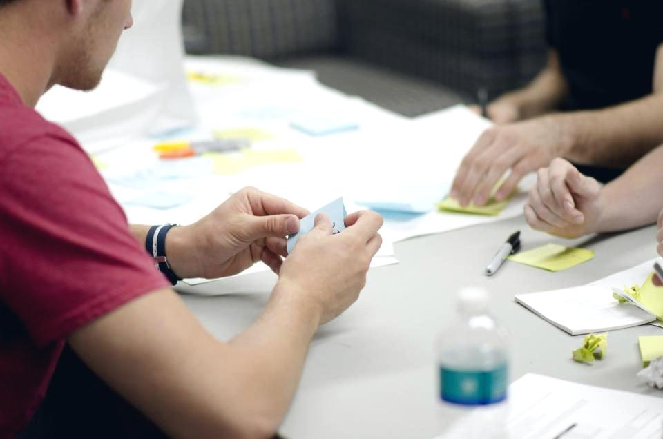
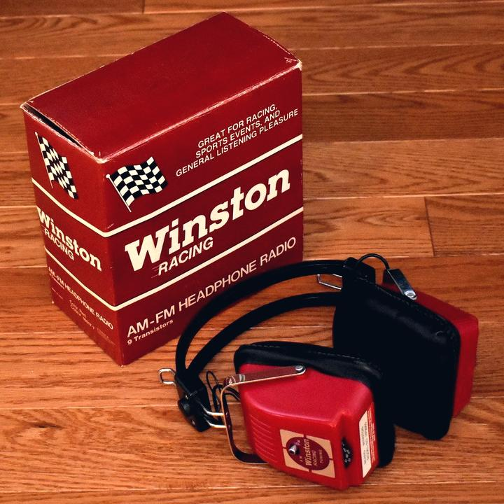
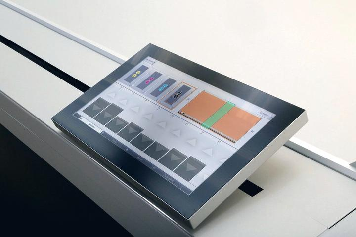
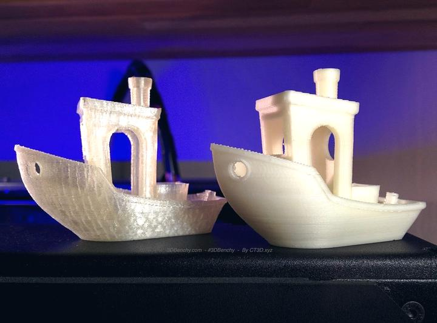
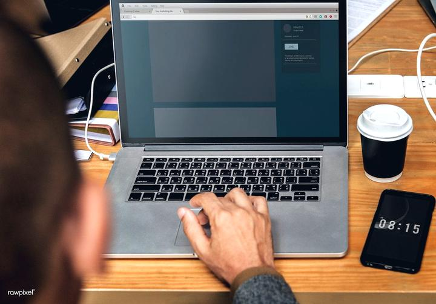

Vous avez vendu la prestation. Nous trouvons qui la produit.
Agence de communication, enseigniste, imprimeur, franchise, agenceur : vous signez régulièrement des projets qui mobilisent un métier que vous n'avez pas en interne, ou un chantier hors de votre zone. Nous identifions l'atelier dont l'outil de production correspond réellement, vous recevez deux ou trois devis comparables, et vous contractez en direct sous votre marque.
Six métiers qui sous-traitent tous les jours
La sous-traitance en communication visuelle n'a rien d'un aveu de faiblesse : aucune structure ne possède à la fois un laser fibre, une imprimante UV grand format, une imprimante 3D, un atelier de covering chauffé et des poseurs dans quatre-vingt-quinze départements. La question n'est pas de tout faire, c'est de savoir à qui confier le reste.
Agences de communication et de publicité
Vous vendez une campagne, une identité, un événement. La fabrication et la pose ne sont pas votre métier, et sous-traiter au hasard d'une recherche Google expose votre nom sur un chantier que vous ne maîtrisez pas.
Ce que vous y trouvez : Fabricants d'enseignes et de signalétique · Imprimeurs grand format · Poseurs habilités · Impression 3D et PLV volumique · Objets publicitaires et textile
Enseignistes et fabricants
Vous produisez en atelier, mais le chantier est à quatre cents kilomètres, ou le client demande un procédé que vous n'avez pas — découpe laser fibre, impression 3D, covering.
Ce que vous y trouvez : Poseurs dans toute la France · Découpe laser et CNC · Impression 3D · Thermolaquage et finitions
Imprimeurs et façonniers
Un client vous commande une bâche de façade, un habillage de vitrine ou un stand : il faut quelqu'un pour l'installer, et souvent des pièces que vous ne produisez pas.
Ce que vous y trouvez : Poseurs et médiapplicateurs · Structures et supports sur mesure · Découpe numérique · Imprimerie offset en complément
Franchises et réseaux multi-sites
Déployer une charte sur quarante points de vente suppose des ateliers capables de produire à l'identique et des équipes de pose coordonnées sur un planning unique.
Ce que vous y trouvez : Fabrication multi-sites à charte constante · Coordination de déploiement · Poseurs régionaux · Maintenance et SAV
Architectes, agenceurs et scénographes
Un projet d'agencement mobilise des métiers que vous ne portez pas en interne : signalétique, découpe sur mesure, volumes, éclairage d'enseigne.
Ce que vous y trouvez : Signalétique intérieure et PMR · Découpe laser et CNC · Impression 3D et maquettes · Enseignes et éclairage
Fournisseurs, distributeurs et centrales d'achat
Vous livrez du matériel, le client final attend une prestation clé en main. Il vous manque le maillon terrain.
Ce que vous y trouvez : Réseau de poseurs national · Fabrication en marque blanche · Logistique et déploiement
Quatre étapes, sans que votre client nous voie jamais
Vous décrivez le besoin, en termes de professionnel
Pas de formulaire grand public : vous parlez matériaux, épaisseurs, procédés, délais et contraintes de chantier. Nous comprenons le vocabulaire, ce qui vous évite de tout réexpliquer.
Nous identifions l'atelier dont l'outil correspond
C'est là que se joue la qualité de la sous-traitance. Un laser fibre ne fait pas ce que fait une fraiseuse, un imprimeur latex ne fait pas ce que fait un UV à plat. Nous sélectionnons sur les capacités déclarées et vérifiées, pas sur la disponibilité.
Vous recevez deux ou trois propositions comparables
Établies sur le même cahier des charges, donc réellement comparables. Jamais plus de trois : au-delà, les ateliers sérieux se désengagent parce qu'ils chiffrent pour rien.
Vous contractez en direct, sous votre marque
Nous n'apparaissons pas devant votre client. Vous achetez au sous-traitant, vous revendez à votre prix, la relation commerciale reste entièrement la vôtre.
Nous sommes un intermédiaire technique, pas un concurrent. Nous ne vendons rien au client final, nous ne signons aucun chantier et nous n'apparaissons sur aucun document commercial. Notre rémunération vient uniquement de l'abonnement des ateliers du réseau.
Ce que vous pouvez faire produire
Un même dossier en mobilise souvent plusieurs — une enseigne, le marquage des véhicules assorti, la vitrine et le textile de l'équipe. Nous coordonnons l'ensemble depuis un cahier des charges unique plutôt que de vous laisser répéter quatre fois le même brief.
 Enseignes
EnseignesEnseignes & enseignes lumineuses
Lettres relief, caisson lumineux, néon LED, drapeau, totem
 Signalétique
SignalétiqueSignalétique intérieure & extérieure
Directionnelle, PMR, sécurité, plaques, totems d'orientation
 Covering véhicule
Covering véhiculeCovering & marquage véhicule
Total covering, semi-covering, lettrage, flotte, déco
 Impression
ImpressionImpression numérique grand format
Bâche, banderole, roll-up, panneau, adhésif, kakémono

Objets publicitairesObjets publicitaires & textile
Goodies, textile floqué, EPI marqués, cadeaux d'affaires
 Maquette & création
Maquette & créationMaquette & création graphique
Logo, charte, simulation façade, BAT, fichiers de production
 Pose & nacelle
Pose & nacellePose, nacelle & maintenance
Travail en hauteur, dépose, raccordement, SAV, entretien
 Vitrophanie & PLV
Vitrophanie & PLVVitrophanie, PLV & stands
Vitrine, dépoli, PLV magasin, stands et salons
 Découpe laser & CNC
Découpe laser & CNCDécoupe laser & CNC
Découpe laser, fraisage numérique, gravure, usinage sur mesure

ImprimerieImprimerie
Cartes, flyers, brochures, papeterie, catalogues, façonnage

Impression 3DImpression 3D
Prototypage, pièces techniques, lettres volumiques, maquettes

Site internetCréation de site internet
Site vitrine, e-commerce, refonte, hébergement, maintenance
Référencement naturel
SEO local, technique, contenu, fiche Google, campagnes
Fabriqué près de votre site, pas expédié d'un entrepôt à 800 kilomètres
En communication visuelle, le produit est encombrant, fragile et souvent hors-gabarit. Le faire voyager coûte cher, allonge les délais et ajoute un risque de casse. Le réseau est construit pour l'éviter : l'atelier qui fabrique est celui qui pose, et il est à moins d'une heure de votre façade.
Un poste de transport qui disparaît
Sur une enseigne fabriquée à 700 kilomètres, la livraison peut représenter 5 à 15 % du budget du support. Fabriquée sur place, elle représente zéro. Ce n'est pas une remise commerciale, c'est un coût qui n'existe plus.
Des délais qui ne dépendent plus d'un camion
Une palette hors-gabarit part en messagerie spécialisée : deux à six jours ouvrés, une date de livraison rarement garantie, et un créneau à tenir sur le chantier. En circuit court, le produit sort de l'atelier le matin et il est posé l'après-midi.
Plus de casse en transit, plus de litige
Le plexiglas thermoformé, le PVC expansé grand format et les faces tendues supportent mal la manutention répétée. Une casse en messagerie, c'est une refabrication complète, un chantier reporté et une expertise à mener entre trois intervenants. Un produit qui ne voyage pas ne casse pas.
Un service après-vente qui tient dans la journée
Un transformateur LED qui lâche au bout de dix-huit mois se remplace en deux heures quand le fabricant est à trente kilomètres. Quand il est à l'autre bout de la France, il faut démonter, expédier, attendre, réexpédier, reposer — et votre enseigne reste éteinte pendant trois semaines.
Ce que coûte le transport que vous ne payez pas
| Support | Contrainte de transport | Expédition depuis un atelier unique | Fabriqué sur place |
|---|---|---|---|
| Caisson lumineux simple face 2 m | Palette longue, hors-gabarit | 150 – 400 € | 0 € |
| Totem lumineux double face 3 m | Transport spécifique, hayon | 350 – 900 € | 0 € |
| Jeu de lettres relief rétro-éclairées | Calage sur mesure, fragile | 80 – 250 € | 0 € |
| Bâche ou panneau grand format 6 × 3 m | Rouleau long | 60 – 180 € | 0 € |
| Habillage complet de devanture | Deux palettes minimum | 250 – 600 € | 0 € |
| Signalétique intérieure d'un établissement | Colis multiples, plusieurs envois | 120 – 350 € | 0 € |
Fourchettes indicatives du marché de la messagerie hors-gabarit, hors assurance sur valeur déclarée. Elles varient fortement selon la distance, le volume, la nécessité d'un hayon et le respect d'un créneau de livraison — c'est précisément cette imprévisibilité qui les rend difficiles à budgéter à l'avance.
Sur un déploiement multi-sites, le transport est le seul poste qui ne baisse jamais
Un réseau qui équipe quarante points de vente négocie ses matériaux, ses faces et sa main-d'œuvre au volume. Le transport, lui, se paie quarante fois : chaque site est une expédition distincte, vers une adresse distincte, avec sa propre contrainte de livraison. À 200 € l'envoi moyen, cela fait 8 000 € qui ne financent aucune enseigne. Réparti sur des ateliers de proximité, ce poste tombe à zéro et l'économie revient dans le produit ou dans le prix.
- Un seul cahier des charges technique, écrit une fois, appliqué à l'identique partout
- Mêmes matériaux, mêmes références de faces, mêmes teintes contrôlées site par site
- Un interlocuteur unique côté réseau — vous ne pilotez pas quarante ateliers
- Les poses coordonnées par région, sans camion à faire traverser la France
Quand la fabrication centralisée reste le bon choix
La proximité ne gagne pas sur tout, et prétendre le contraire serait malhonnête. Dès que la pièce est petite, identique en grande série et transportable en colis ordinaire, une production unique reste plus économique : les réglages machine s'amortissent sur la quantité et l'expédition coûte quelques euros. Nous arbitrons projet par projet, et nous le disons quand la centralisation est la bonne réponse.
- Plaques professionnelles, numéros, étiquettes gravéesProduction centralisée — série longue, colis léger
- Adhésifs, vitrophanie découpée, lettrages simplesProduction centralisée — envoi à plat, pose locale
- Objets publicitaires, textiles floqués ou brodésProduction centralisée — série et sourcing
- Enseignes lumineuses, caissons, totems, lettres reliefFabrication locale — volume et fragilité
- Covering et marquage de véhiculesFabrication locale — le véhicule vient à l'atelier
- Signalétique de chantier et grands formats rigidesFabrication locale — encombrement
Ce que nous demandent les professionnels
Puis-je sous-traiter sans que mon client sache que je sous-traite ?
Oui, c'est même le cas le plus fréquent. Nous n'intervenons jamais devant votre client : vous contractez avec l'atelier, vous facturez sous votre marque, et rien n'oblige le sous-traitant à se manifester. Si vous souhaitez qu'il intervienne sous votre nom — véhicule neutre, tenue sans logo, remise du chantier en votre nom — précisez-le dans la demande, beaucoup de nos partenaires le pratiquent couramment.
Vos partenaires vont-ils me prendre mon client ?
C'est la crainte légitime de tout donneur d'ordre, et elle mérite une réponse franche. Nous ne pouvons pas contractualiser une clause de non-sollicitation à votre place : c'est à vous de la prévoir avec l'atelier que vous retenez. Ce que nous pouvons faire, et que nous faisons, c'est retirer du réseau tout partenaire qui court-circuite un donneur d'ordre — un atelier qui gagne un client une fois et perd un apporteur régulier a fait un très mauvais calcul, et nous le lui rappelons à l'adhésion.
Quels métiers puis-je sous-traiter ?
Les treize métiers du réseau : enseignes, signalétique, covering de véhicules, impression grand format, imprimerie offset et numérique, objets publicitaires et textile, création graphique, pose et nacelle, vitrophanie et PLV, découpe laser et CNC, impression 3D, création de site internet et référencement naturel. Un même projet peut en mobiliser plusieurs — nous le coordonnons depuis un cahier des charges unique.
Travaillez-vous en marque blanche ?
Oui. C'est le mode le plus courant en B2B : l'atelier produit, vous livrez sous votre marque. Certains partenaires acceptent également l'expédition directe au client final avec votre bon de livraison. Précisez-le dès la demande, car tous ne le pratiquent pas et cela oriente la sélection.
Le service est-il payant pour le donneur d'ordre ?
Non. La mise en relation est gratuite et sans engagement, comme pour un client final : ce sont les ateliers du réseau qui financent le service par un abonnement fixe. Aucune commission n'est ajoutée au prix du sous-traitant, donc le prix que vous obtenez est son prix.
Quels délais sur un dossier professionnel ?
Vous recevez les propositions sous 48 heures ouvrées, souvent moins sur un besoin de pose. Les délais de production restent ceux du métier concerné : 2 à 4 semaines pour une enseigne, 3 à 8 jours pour de la découpe sur fichier propre, 3 à 15 jours en imprimerie selon le façonnage.
Pouvez-vous gérer un déploiement multi-sites ?
Oui, c'est même là que le réseau prend tout son sens. Un déploiement sur plusieurs régions suppose des ateliers capables de produire à l'identique et des poseurs coordonnés sur un planning commun. Nous vous adressons alors des partenaires de niveau Régional ou National, seuls dimensionnés pour ce type de dossier.
Vous avez un projet de communication visuelle ?
Commerce, entreprise, artisan, profession libérale, collectivité : décrivez votre projet en 2 minutes. Nous le qualifions et le confions à des professionnels sélectionnés près de chez vous. Vous recevez des propositions comparables sous 48 heures, gratuitement et sans engagement.
Demander mon devis gratuit